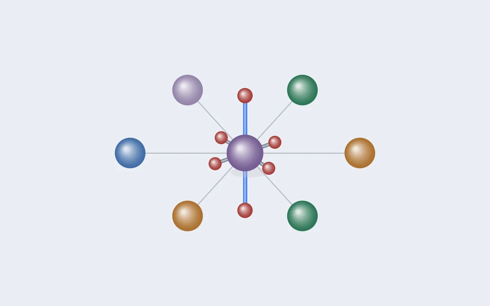
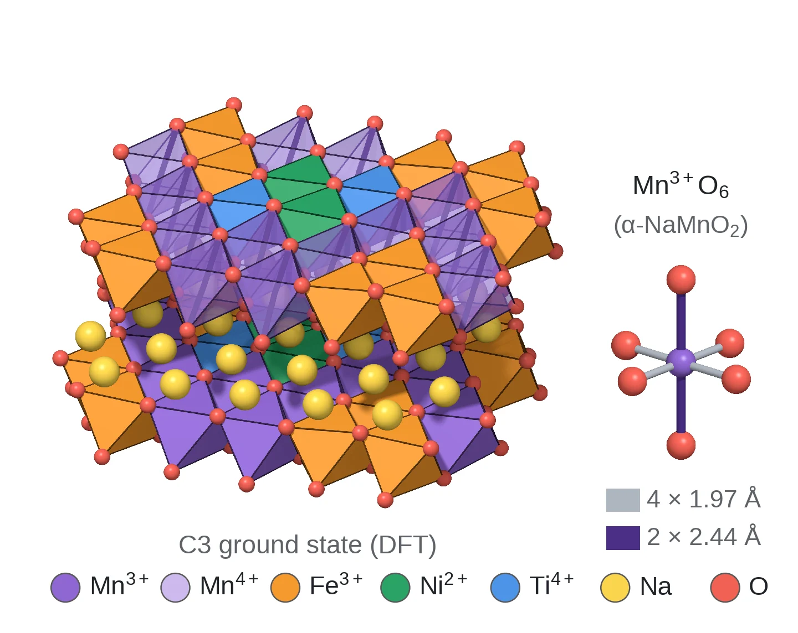
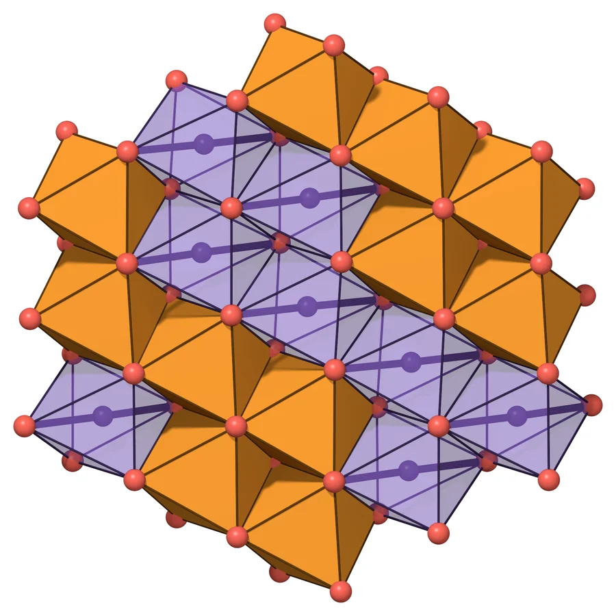
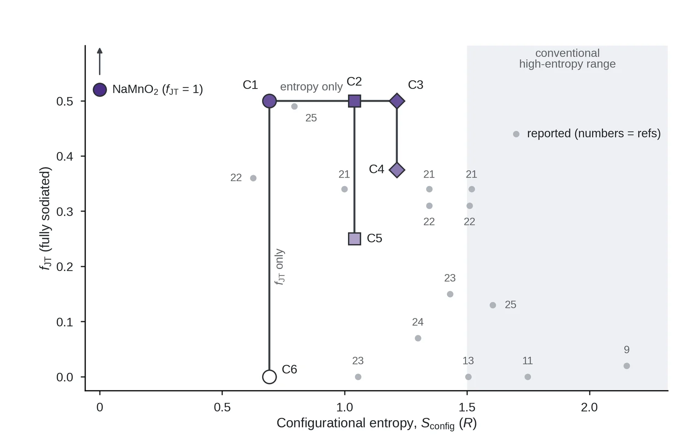
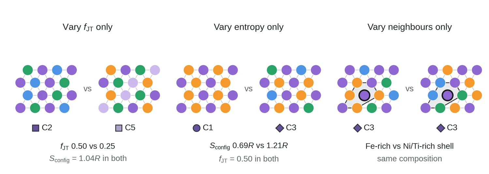

연구 [1] — 고엔트로피 양극재는 왜 얀-텔러를 누를까: 엔트로피인가, 얀-텔러 이온의 비율인가
이 글부터 본 연구를 소개합니다. 첫 글은 결과가 아니라 질문입니다. 고엔트로피 치환이 얀-텔러 왜곡을 누른다는 것은 여러 실험이 보여줬지만, 그 이유가 구성 엔트로피인지, 얀-텔러를 일으키는 이온의 수가 줄었기 때문인지는 아직 가려지지 않았습니다. 왜 가려지지 않았는지, 이 연구는 어떻게 가르려는지 정리했습니다.

이 글에 나오는 말
- O3형 층상 산화물: Na가 팔면체 자리에 앉고 산소 층의 배열이 전이금속(TM) 층 3개마다 반복되는 NaxTMO₂입니다. TM 층 안에서는 TMO₆ 팔면체들이 모서리를 맞대고 평평한 판을 이룹니다.
- 얀-텔러 왜곡: eg 궤도에 전자가 홀수 개인 이온(이 글에서는 Mn³⁺)의 팔면체가 한 축으로 늘어나 에너지를 낮추는 현상입니다. α-NaMnO₂에서는 짧은 결합 넷이 1.97 Å, 긴 결합 둘이 2.44 Å이고, 그 비 1.24를 왜곡의 크기로 씁니다.
- 협동 얀-텔러 효과: 모서리를 맞댄 팔면체들이 같은 방향으로 함께 늘어나 결정 전체가 변형되는 현상입니다.
- 구성 엔트로피 Sconfig: TM 자리에 섞인 원소들의 비율 x로 계산한 −R Σ x ln x입니다. 원소가 많고 고르게 섞일수록 큽니다. 보통 1.5R 이상을 고엔트로피라고 부릅니다.
- fJT: TM 자리 가운데 Mn³⁺가 차지하는 비율입니다. 얀-텔러를 일으키는 이온이 얼마나 많은지를 나타냅니다.
- 세 변수: 구성 엔트로피, 이웃 원소의 종류, fJT입니다. 보고된 고엔트로피 조성들에서는 엔트로피와 fJT가 늘 함께 움직여 왔습니다.
- C1~C6: 화학식당 Mn을 0.5로 고정한 여섯 조성입니다. C1~C3은 fJT = 0.5로 같고 엔트로피만 0.69R에서 1.21R로 다르며, C1·C6, C2·C5, C3·C4는 엔트로피가 같고 fJT만 다릅니다.
요약
질문. 고엔트로피 치환이 Mn³⁺의 얀-텔러 왜곡을 누르는 이유는 구성 엔트로피인가, 특정 이웃 원소인가, 얀-텔러 이온의 비율 fJT인가.
방법. 보고된 고엔트로피 층상 양극재와 비교 조성 14개를 Sconfig와 fJT의 평면에 놓아 두 변수의 관계를 봤습니다. 그리고 Mn을 0.5로 고정한 여섯 조성을 설계해, 엔트로피가 같고 fJT만 다른 쌍(C1·C6, C2·C5, C3·C4)과 fJT가 같고 엔트로피만 다른 계열(C1~C3)을 만들었습니다. 이웃의 효과는 같은 조성 안의 배열 30개로 봅니다.
답. 보고된 조성들에서는 엔트로피가 높을수록 fJT가 낮아 두 변수가 함께 움직였습니다(상관계수 −0.58). 그래서 기존 실험으로는 어느 쪽이 원인인지 가를 수 없었습니다. 이 글은 질문과 설계까지이고, 답은 연구 [3]에 있습니다.
1. 배경: Mn이 많은 O3형 층상 산화물
Na는 Li보다 훨씬 흔하고 값이 싸서, 무게보다 가격이 중요한 대규모 에너지 저장에서 Na 이온 전지가 주목받고 있습니다 [1]. 양극재 후보 중에서는 전이금속(TM) 산화물 층 사이에 Na가 끼어 있는 층상 산화물 NaxTMO₂가 용량과 합성 난이도 모두에서 유망합니다. 이 연구가 다루는 것은 Na가 팔면체 자리에 앉고 산소 층이 TM 층 세 개마다 반복되는 O3형입니다 [2].

그림 1에서 보듯 TM 층 안에서는 팔면체들이 모서리를 맞대고 평평한 판을 이룹니다. TM 자리에 Mn을 많이 쓰면 원료가 싸고 용량도 크지만, 대가가 하나 있습니다. 바로 Mn³⁺가 일으키는 얀-텔러 왜곡입니다.
2. 문제: Mn³⁺의 얀-텔러 왜곡
산소 여섯 개가 둘러싼 팔면체 안에서 d 궤도 다섯 개는 에너지가 두 무리로 갈라집니다. 산소를 정면으로 향하는 두 궤도(eg)는 높고, 산소 사이를 향하는 세 궤도(t2g)는 낮습니다. 고스핀 Mn³⁺는 d 전자가 4개라서, 마지막 전자 하나가 같은 높이의 eg 두 궤도 중 하나에 들어가야 합니다.
그림 2는 이 상황을 보여줍니다. 같은 에너지의 상태가 겹쳐 있으면 구조가 스스로 대칭을 깨서 한쪽을 낮추는 편이 이득입니다(얀-텔러 정리). 그 결과 Mn³⁺ 팔면체는 짧은 결합 넷과 긴 결합 둘로 늘어납니다. α-NaMnO₂에서는 1.97 Å 넷과 2.44 Å 둘이었습니다. 이 연구에 나오는 이온 중 이런 왜곡을 일으키는 것은 Mn³⁺뿐입니다. Mn⁴⁺(d³), 고스핀 Fe³⁺(d⁵), Ni²⁺(d⁸), Ti⁴⁺(d⁰)는 eg 궤도가 비어 있거나 고르게 차 있어서 늘어날 이유가 없습니다.
3. 왜 문제인가: 협동 얀-텔러와 상전이
팔면체 하나만 따로 있다면 이야기는 여기서 끝납니다. 하지만 층상 구조에서는 팔면체들이 모서리를 공유하기 때문에, 한 팔면체가 늘어나면 공유한 산소가 움직이고 이웃 팔면체도 영향을 받습니다.

그림 3은 우리 계산에서 나온 실제 예입니다. Mn³⁺ 팔면체마다 긴 결합의 방향이 제각각이 아니라 모두 같은 방향으로 맞춰져 있습니다. 이렇게 개별 왜곡이 서로 맞물려 정렬하는 현상을 협동 얀-텔러 효과라고 합니다 [3, 4]. 모두가 한 방향으로 늘어나니 결정 전체도 그 방향으로 늘어납니다.
문제는 충방전 중에 생깁니다. Na를 빼면 Mn³⁺가 Mn⁴⁺로 바뀌는데, Mn⁴⁺는 늘어나지 않습니다. 그래서 격자 전체의 변형이 충방전마다 커졌다 작아졌다 하고, 여기에 Na 빈자리의 정렬까지 얽힙니다. 실제로 Na₅/₈MnO₂에서는 Mn³⁺의 정렬과 Na 빈자리 정렬이 맞물린 초격자가 원자 수준에서 관찰됐습니다 [3]. 그 결과 전압 곡선에 여러 번의 상전이가 나타나고 [5], 반복되는 격자 변형은 수명을 깎는 원인이 됩니다 [6].
4. 기존 해법과 엇갈리는 설명
이 문제를 다루는 전략은 크게 두 가지입니다.
| 전략 | 아이디어 | 대가 또는 한계 |
|---|---|---|
| Mn³⁺ 자체를 줄인다 | 2가 이온을 넣으면 전하를 맞추려고 Mn이 4+로 산화된다 [7] | Mn이 낼 수 있는 산화·환원 용량도 함께 줄어든다 |
| 여러 원소를 섞는다 (고엔트로피) | TM 층에 다섯 종 이상의 원소를 섞는다 [8–10] | 효과는 보고되지만, 왜 듣는지에 대한 설명이 갈린다 |
두 번째 전략은 실험 결과가 좋아 빠르게 퍼졌습니다. 그런데 그 이유에 대해서는 세 가지 설명이 나와 있습니다. 첫째, 섞인 원소가 많을수록 구성 엔트로피가 높아져 팔면체 왜곡과 층의 미끄러짐이 줄어든다는 설명입니다 [11]. 둘째, Ti⁴⁺ 같은 특정 원소가 주변 격자를 붙잡아 얀-텔러와 상전이를 누른다는 설명입니다 [12]. 셋째, 여러 원소가 함께 작용하는 시너지라는, 리뷰 논문들의 정리입니다 [13].
5. 풀리지 않은 질문: 엔트로피와 비율이 함께 움직여 왔다
세 설명을 시험하려면 먼저 비교의 기준이 될 두 양을 정해야 합니다. 하나는 TM 자리에 섞인 원소들의 구성 엔트로피 Sconfig입니다(원소별 비율 x로 −R Σ x ln x). 다른 하나는 TM 자리 중 Mn³⁺가 차지하는 비율 fJT입니다. 얀-텔러를 일으키는 이온이 얼마나 많은지를 나타냅니다.

그림 4는 보고된 조성 14개를 이 평면에 찍은 결과입니다. 회색 점들은 왼쪽 위에서 오른쪽 아래로 흩어져 있습니다. 엔트로피가 높은 조성일수록 fJT가 낮고, 상관계수는 −0.58입니다. 고엔트로피 조성은 대개 Ni²⁺, Cu²⁺, Mg²⁺ 같은 2가 이온을 많이 넣기 때문에, 전하를 맞추려고 Mn이 4+로 산화되면서 Mn³⁺가 줄어드는 것입니다.
이것이 바로 문제입니다. 고엔트로피 조성에서 얀-텔러가 줄었다는 관찰은 엔트로피 덕분일 수도 있고, 단지 Mn³⁺가 적어서일 수도 있습니다. 두 변수가 함께 움직이는 한, 어느 쪽인지 가를 수 없습니다. 일부 연구(참고문헌 21, 22)는 fJT가 거의 같은 채 엔트로피만 올렸지만, 이때도 특정 원소와 Na 함량이 함께 바뀌었습니다. 그래서 이 연구의 질문은 하나로 모입니다. Mn³⁺의 얀-텔러 왜곡을 정하는 것은 구성 엔트로피인가, 이웃 원소의 종류인가, 아니면 얀-텔러 이온의 비율인가?
6. 이 연구의 접근: 세 변수를 떼어 놓는 설계
세 변수를 가르기 위해 화학식당 Mn을 0.5로 고정한 조성 여섯 개를 설계했습니다. 원소를 고른 이유는 전하 균형에 있습니다. Fe³⁺는 Mn³⁺와 같은 3가라서 넣어도 Mn은 3가로 남습니다. Ni²⁺ 하나와 Ti⁴⁺ 하나는 합쳐서 3가 둘과 전하가 같아서, 짝으로 넣으면 Mn이 역시 3가로 남습니다. 반대로 Ni²⁺만 넣으면 전하를 맞추려고 Mn 일부가 4가로 바뀌고, fJT가 내려갑니다.
| 조성 | TM 자리 (Na[TM]O₂) | Sconfig (R) | fJT |
|---|---|---|---|
| C1 | Mn₀.₅Fe₀.₅ | 0.69 | 0.50 |
| C2 | Mn₀.₅Ni₀.₂₅Ti₀.₂₅ | 1.04 | 0.50 |
| C3 | Mn₀.₅Fe₀.₂₅Ni₀.₁₂₅Ti₀.₁₂₅ | 1.21 | 0.50 |
| C4 | Mn₀.₅Fe₀.₁₂₅Ni₀.₂₅Ti₀.₁₂₅ | 1.21 | 0.375 |
| C5 | Mn₀.₅Fe₀.₂₅Ni₀.₂₅ | 1.04 | 0.25 |
| C6 | Mn₀.₅Ni₀.₅ | 0.69 | 0 |
표 2에서 두 가지를 볼 수 있습니다. 첫째, C1, C2, C3은 fJT가 0.50으로 같고 엔트로피만 0.69R에서 1.21R로 올라갑니다. 둘째, C1과 C6, C2와 C5, C3와 C4는 엔트로피가 정확히 같고 fJT만 다릅니다. 그림 4의 보라 기호를 보면, 우리 조성은 가로줄 하나와 세로줄 셋으로 놓여서 문헌 조성들처럼 대각선으로 흩어지지 않습니다.

그림 5의 오른쪽은 세 번째 변수, 이웃 원소의 종류를 보여줍니다. 고엔트로피 조성은 같은 조성 안에서도 원자 배치가 수백만 가지라서, 자리마다 이웃이 다릅니다. 그래서 이 연구는 조성마다 배열 30개를 DFT로 계산했습니다. 같은 조성 안의 배열들을 비교하면 엔트로피와 fJT를 고정한 채 이웃만 바꾼 효과를 볼 수 있습니다. 어떻게 배열을 고르고 계산했는지는 연구 [2]에서 다룹니다.
이 설계의 한계
Mn을 0.5에 두고 fJT를 0.5로 유지하면서 Mn, Fe, Ni, Ti 네 원소만 쓰면 엔트로피는 약 1.24R을 넘을 수 없습니다. 그래서 우리 조성은 통상의 고엔트로피 범위(1.5R 이상)에는 닿지 않습니다(그림 4의 회색 영역). 이 범위까지 넓히려면 원소를 더 넣어야 하고, 지금 검토하고 있습니다.
정리
- 문제: Mn³⁺의 얀-텔러 왜곡은 모서리를 공유하는 층에서 협동적으로 정렬해 격자 전체를 변형하고, 충방전 중 상전이와 수명 저하로 이어진다.
- 기존 설명: 고엔트로피 치환이 이를 누르는 이유로 구성 엔트로피, 특정 원소의 고정 효과, 시너지가 제안되어 왔다.
- 풀리지 않은 점: 보고된 조성들에서는 엔트로피와 얀-텔러 이온 비율이 함께 움직여서(상관계수 −0.58), 어느 쪽이 원인인지 가를 수 없었다.
- 이 연구: 엔트로피가 같고 비율만 다른 쌍, 비율이 같고 엔트로피만 다른 계열, 조성이 같고 이웃만 다른 배열을 만들어 세 변수를 따로 시험한다.
참고문헌
- Yabuuchi, N. et al. Research development on sodium-ion batteries. Chem. Rev. 114, 11636 (2014).
- Delmas, C., Fouassier, C. & Hagenmuller, P. Structural classification and properties of the layered oxides. Physica B+C 99, 81 (1980).
- Li, X. et al. Direct visualization of the Jahn–Teller effect coupled to Na ordering in Na₅/₈MnO₂. Nat. Mater. 13, 586 (2014).
- Goodenough, J. B. Jahn–Teller phenomena in solids. Annu. Rev. Mater. Sci. 28, 1 (1998).
- Ma, X., Chen, H. & Ceder, G. Electrochemical properties of monoclinic NaMnO₂. J. Electrochem. Soc. 158, A1307 (2011).
- Layered oxide cathodes for sodium-ion batteries: phase transition, air stability, and performance. Adv. Energy Mater. 8, 1701912 (2018).
- Zhang, K. et al. Manganese based layered oxides with modulated electronic and thermodynamic properties for sodium ion batteries. Nat. Commun. 10 (2019).
- Zhao, C. et al. High-entropy layered oxide cathodes for sodium-ion batteries. Angew. Chem. Int. Ed. (2020).
- Ding, F. et al. Tailoring planar strain for robust structural stability in high-entropy layered sodium oxide cathode materials. Nat. Energy 9 (2024).
- Fu, F. et al. Entropy and crystal-facet modulation of P2-type layered cathodes for long-lasting sodium-based batteries. Nat. Commun. 13 (2022).
- Massaro et al. Entropy-driven mechanisms in P2-type layered oxide cathodes for sodium-ion batteries. J. Mater. Chem. A (2026).
- Jia, X.-B. et al. Design principles of practical industrial-scale layered oxide cathodes with air/water stability for sustainable sodium-ion batteries. Nat. Commun. 16 (2025).
- Formulating cathode materials based on high-entropy strategies for sodium-ion batteries. Chem. Sci. (2025).
그림 4의 숫자는 논문 원고의 참고문헌 번호입니다. 블로그 목록에는 대표 문헌만 실었습니다.